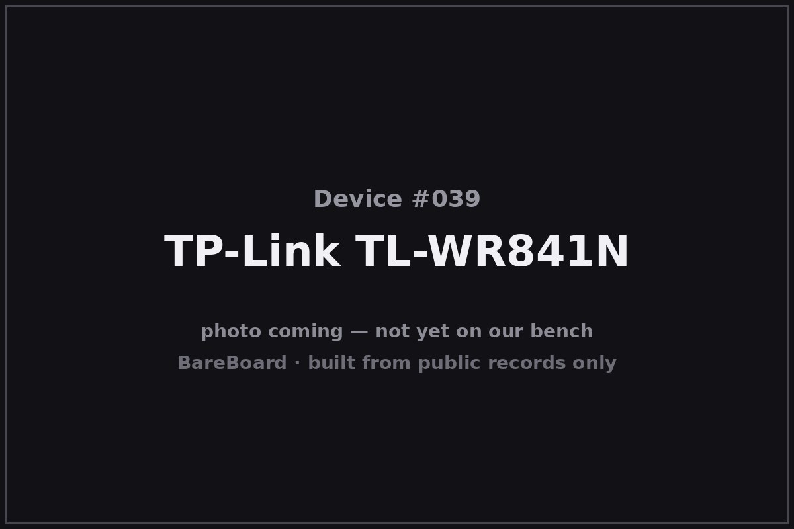

The Autopsy Report · Device #039
The TP-Link TL-WR841N
The cheapest router that ever mattered — thirty dollars of 802.11n that connected dorm rooms, cafés, and half the developing world.
What is this thing?
The TP-Link TL-WR841N (and its detachable-antenna twin, the TL-WR841ND) is a single-band 802.11n (“N300”) wireless router — up to 300 Mbps on 2.4 GHz, four Fast Ethernet ports, and a price that spent years hovering around thirty dollars. It sold in staggering volume worldwide and became the default “first router” — and the default first OpenWrt target — for a generation. OpenWrt wiki
Like the DIR-615, the WR841N is a revision-sprawl device: v1 through v14+ span Atheros and later MediaTek silicon. This report pins its primary evidence to version 10, covered by FCC ID TE7WR841NXV10. FCC filing
Not on our bench (yet)
This device is not on our bench. We have never owned, opened, photographed, measured, or powered on the TL-WR841N. Everything in this report comes from public records: government filings, manufacturer documents, manuals, and credible public teardowns and hardware databases. Where a fact would require holding the hardware in our hands — our own photos, our measurements, our boot logs, the exact board revision of a future unit — we say so, out loud, and mark it unknown. Nothing here is presented as first-hand BareBoard evidence.
That constraint is also the point: you can learn a remarkable amount about a device without ever touching it, because the public record is deep. What follows is everything the record could tell us — and an honest map of where the record runs out.
A short history
- 2015-05-05The FCC grants equipment authorization TE7WR841NXV10 to TP-Link Technologies Co., Ltd. for the TL-WR841N v10 — this report's primary evidence. FCC filing
- c. 2009–2020The WR841N/ND family ships in enormous volume across more than a dozen hardware versions — Atheros AR7240/AR9341/QCA9533 generations giving way to MediaTek in the latest revisions — while the price barely moves. OpenWrt wiki
- 2015–presentThe OpenWrt project's device page becomes the living public record for the family: per-revision SoCs, flash/RAM sizes, and install notes, maintained by the community. OpenWrt wiki
The outside
The WR841N is a small white rounded box with two external antennas (fixed on the N, detachable reverse-SMA on the ND) and a front row of green LEDs — power, system, WLAN, WAN, and one per LAN port, plus WPS and a USB-less simplicity. The rear carries four Fast Ethernet LAN ports, one WAN port, power, and the reset/WPS buttons. FCC filing

The N/ND split is the visible revision marker: fixed versus detachable antennas, same board family underneath.
The board
The v10 board, per the public record: a Qualcomm Atheros QCA9533 SoC — a 650 MHz MIPS processor with integrated 2.4 GHz 802.11n radio — with a small SPI flash (4 MiB class) and 32 MiB of RAM, plus a serial header the community has documented for console access. The FCC filing's exhibits include public internal photos — a correction to the original research note, which had said none existed. FCC filing OpenWrt wiki
Later revisions are different hardware — the newest are MediaTek-based — and are not covered by anything in this report.
Under the microscope: the chips
What's on the TL-WR841N v10 board, per the equipment-authorization exhibits and the community hardware record. Badge levels are honest about which is which.
| Chip | What it does | How we know | Dig deeper |
|---|---|---|---|
| Qualcomm Atheros QCA9533 | The main SoC — 650 MHz MIPS with integrated 2.4 GHz 802.11n radio. | Likely The community hardware record (OpenWrt device page) for v10; consistent with the filing's test configuration. | OpenWrt wiki |
| SPI flash, 4 MiB class | Firmware storage. | Likely The community hardware record for v10. | OpenWrt wiki |
| RAM, 32 MiB | Working memory. | Likely The community hardware record for v10. | OpenWrt wiki |
Exact part markings (flash/RAM vendor part numbers) are not verified from the public exhibits we could access. Later MediaTek-based revisions are separate hardware and explicitly excluded.
The government's file on this box
The government's file on the v10 hardware is public under FCC ID TE7WR841NXV10, granted to TP-Link Technologies Co., Ltd. on May 5, 2015. FCC filing
- What's public: internal and external photos (correcting the earlier research note), the manual, test reports, and the operational description. The lab measured about 156 mW conducted output at 2.412–2.462 GHz.
- Scope: v10 only. The WR841N's other thirteen-plus versions were authorized separately.
Browse it yourself: filing page
Service, recovery, and debug modes
We listen, we don't knock: this section documents only that service or recovery modes exist in the public record, and what kind of thing they are — never how to defeat a lock.
The community hardware record documents a serial (UART) interface on the v10 board, used for console access in third-party firmware work. OpenWrt wiki Third-party evidence only: existence, not a verified pinout or settings.
No manufacturer-published rescue or recovery mode was located in the public record for this model; the recovery story here is community tooling, not a vendor utility.
What the public record shows
The thirty-dollar router changed who gets to learn. The WR841N's public record is inseparable from its price: when the hardware costs less than a textbook, experimenting stops being precious. A huge share of the world's hands-on networking education happened on boards like this one.
Revision sprawl, again. Fourteen-plus versions under one model name, spanning two silicon vendors — the WR841N is the DIR-615's spiritual sibling. The OpenWrt device page's per-revision tables are the public record doing the job the model name doesn't: telling you which computer you actually bought.
Small flash is a design constraint with teeth. The 4 MiB flash class on the v10-era boards famously limited which firmware builds would fit — a physical fact about the board that shaped the entire third-party software story around it.
What we didn't do
- We never had a unit, so we took no photographs and no measurements.
- We never opened an enclosure or lifted an RF shield.
- We never captured a boot log or probed a debug port.
- We never extracted, modified, redistributed, or ran the device's firmware.
- We never defeated a lock, bypassed authentication, or recovered credentials or keys — and we publish none.
- We never tested an exploit or a vulnerability against any device.
- Anything below marked Unknown stays unknown until a unit reaches our bench.
By the numbers
- Device: TP-Link TL-WR841N / TL-WR841ND (this report: v10)
- Era: c. 2009–2020 (v10: 2015)
- FCC ID: TE7WR841NXV10 (TP-Link Technologies; granted 2015-05-05; v10 only)
- Wireless: 802.11n 2.4 GHz only (N300); ~156 mW conducted (filing)
- Wired: 4× Fast Ethernet LAN + 1× WAN
- Likely main chip (v10): Qualcomm Atheros QCA9533, 650 MHz MIPS
- Likely memory (v10): 4 MiB flash; 32 MiB RAM
- Street price (era): Often ~$30 USD
Words to know
Every term this page uses, in plain English. No prior knowledge required.
- N300
- A speed class: up to 300 Mbps on 2.4 GHz 802.11n. Real-world speeds are lower.
- Single-band
- A router that only speaks 2.4 GHz — no 5 GHz radio.
- Fast Ethernet
- 100 Mbps wired networking — the generation before gigabit.
- Revision sprawl
- When one model name ships as many different hardware designs over its life. The WR841N is a classic case.
- UART / serial console
- A simple port that lets you watch a device narrate its own startup, line by line.
- FCC ID
- The ID the FCC assigns to each approved wireless product. Punch it into fccid.io and the whole public filing comes up.
- FCC
- The Federal Communications Commission — the U.S. agency that regulates anything that transmits radio.
Sources & confidence
- FCC equipment authorization TE7WR841NXV10 (grantee TP-Link Technologies Co., Ltd., grant 2015-05-05, ~156 mW conducted; internal photos public — correcting the earlier research note): primary evidence for v10. High confidence, v10 only.
- Per-revision SoCs, flash/RAM, and serial-interface notes: the OpenWrt project's TL-WR841ND device page, maintained by the community. Medium confidence; kept revision-specific.
- Later MediaTek-based revisions are separate hardware: the same community record. Medium-high confidence; excluded from this report's claims.
- Exact flash/RAM vendor part numbers not verified from accessible exhibits; stated as a gap.
Anything not listed here is unknown until the bench says otherwise. We'll say so, out loud, when that's the case.
Legal note. BareBoard is an educational project. This page is built entirely from public records — government filings, manufacturer documents, and published third-party research — about hardware we have never possessed. We don't publish, host, or distribute firmware, keys, passwords, or credentials, and nothing here is instructions for defeating a lock or an authentication check. Product names and trademarks belong to their respective owners and appear here only to identify the hardware. If you believe anything here infringes your rights, contact us and we'll address it promptly.